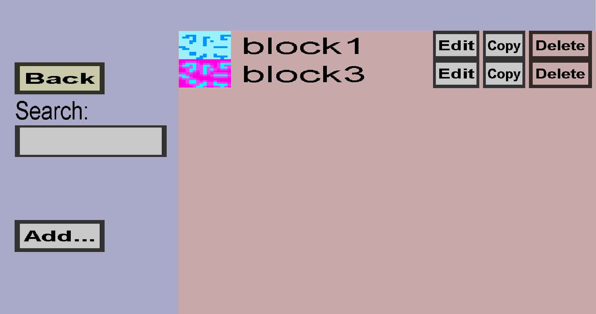

The ore vein generator overview can be used to view and manage your ore vein generators. An ore vein generator is a world generation process that will attempt to replace some blocks (typically stone) with veins of ore (for instance coal ore). This menu should look like this:
You can use the Add... to add new ore vein generators and you can use the Edit, Copy, and Delete buttons to interact with existing ore vein generators.